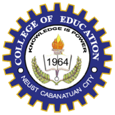

The Teacher Education Course is a four-year program that aims to produce competent and highly skilled teachers who will be able to mold the minds of the next generation of Filipinos. The program covers various subjects such as Mathematics, English, Social Studies, Science, Filipino, and other general education courses. NEUST's Teacher Education Course has a strong emphasis on the practical application of teaching techniques. The program requires students to complete 396 hours of classroom observation and 396 hours of actual teaching in different schools within the province. This hands-on approach allows students to gain valuable experience and hone their teaching skills before they graduate. The program also offers various electives such as Special Education, Early Childhood Education, and Guidance and Counseling. These electives provide students with additional knowledge and skills that they can use to specialize in specific areas of teaching. NEUST's Teacher Education Course is accredited by the Philippine Association of Colleges and Universities Commission on Accreditation (PACUCOA). This accreditation is a testament to the quality of education that NEUST provides to its students. It also ensures that graduates of the program are well-equipped to pass the Licensure Examination for Teachers (LET), which is a requirement for anyone who wants to become a licensed teacher in the Philippines.
NEUST's Teacher Education Course also has an active student organization called the NEUST-Student Teachers' Association (STA). The STA provides its members with various opportunities to enhance their skills and knowledge as future teachers. It also conducts community outreach programs such as teaching literacy to out-of-school youth and providing educational assistance to underprivileged children. The faculty members of NEUST's Teacher Education Course are highly qualified and experienced. Most of them have Master's or Doctoral degrees in Education, and many of them are active in research and publication. They are dedicated to providing their students with quality education and ensuring that they are well-prepared for their future careers as teachers. NEUST's Teacher Education Course has produced numerous successful graduates who have made significant contributions to the education sector in the Philippines. Many of them have become successful school administrators, educational researchers, and even policymakers. Some of the program's notable alumni include Dr. Esther Garcia, a former Undersecretary of the Department of Education, and Dr. Cornelio Garcia, a former Dean of the College of Education at NEUST.
In conclusion, NEUST's Teacher Education Course is an excellent program for anyone who wants to pursue a career in teaching. It provides students with a comprehensive education that emphasizes practical application and hands-on experience. The program is accredited by PACUCOA, and its graduates are well-prepared to pass the LET and become licensed teachers. With its highly qualified faculty members and active student organization, NEUST's Teacher Education Course is undoubtedly one of the best teacher education programs in the Philippines.